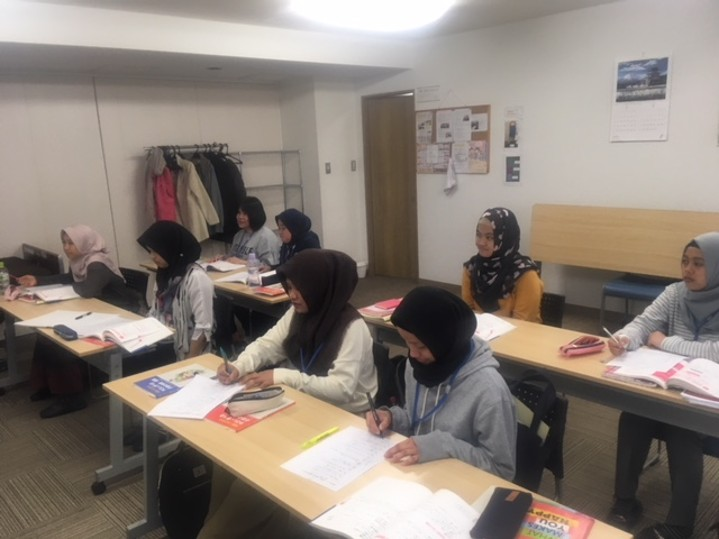
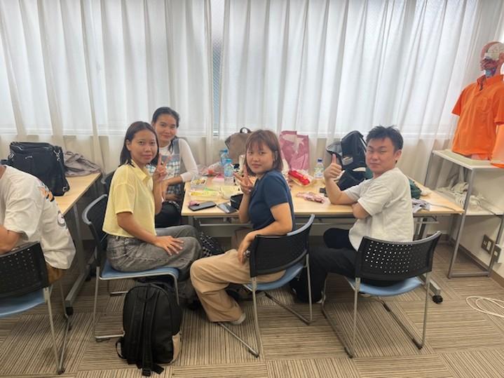
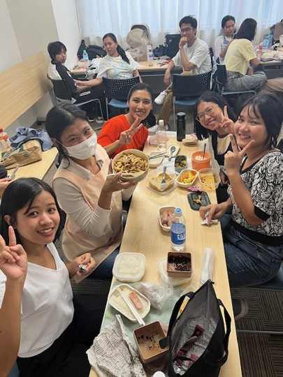
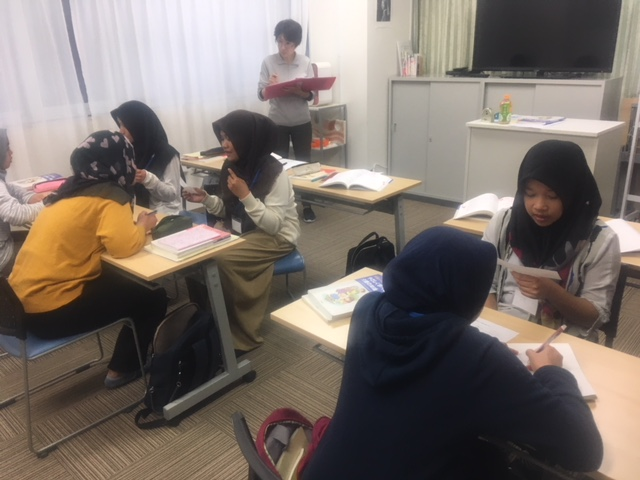
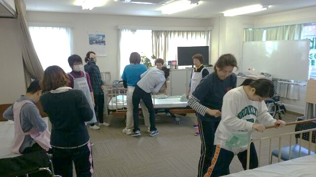
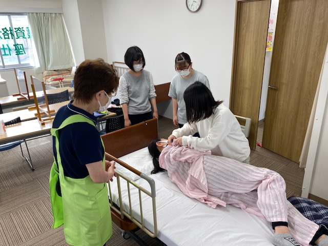
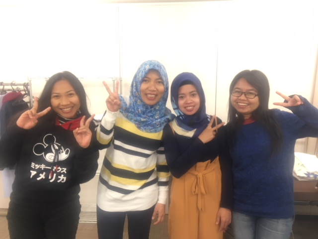
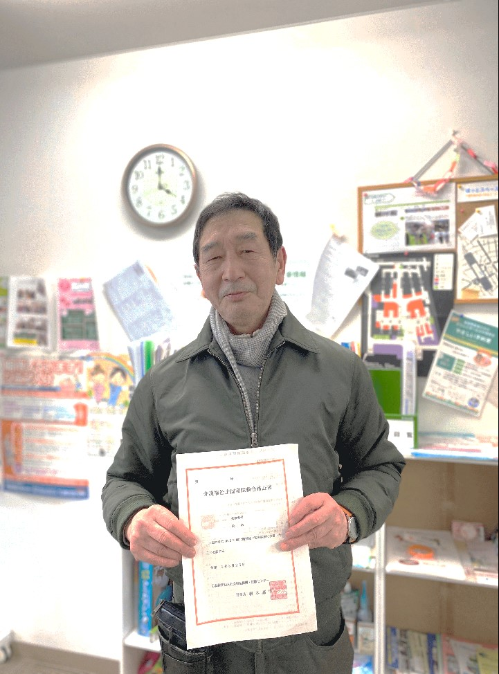
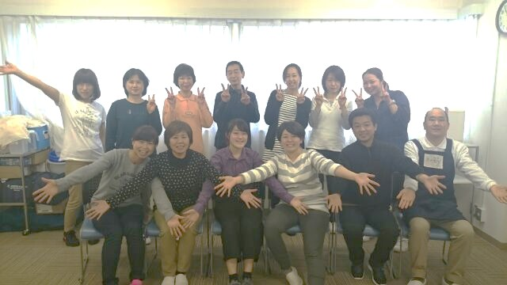
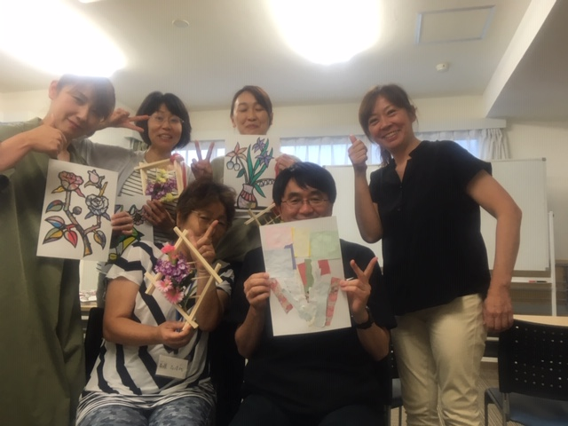

日本の介護の仕事を知ろう
外国人向けセミナー


外国人向けセミナー
下が広いほど若い国。上が広くなるほど高齢化が進んでいます。
国の人を100人としたとき、65歳以上の人が何人いるかを示す数字です。この数字が大きいほど、高齢者が多い国です。
💡 日本は世界で一番高齢化が進んだ国です。介護の仕事をする人が足りていません。
出典：UN World Population Prospects 2024 / 世銀（World Bank）/ GLOBAL NOTE（2024年データ）/ 内閣府「高齢社会白書」（2030年以降は推定値）
出典：World Bank / GLOBAL NOTE（2024年）
日本で仕事を覚えて、自分の国に帰ります。5年間います。
仕事ができる外国人のためのビザです。会社を変えることができます。
フィリピン・ベトナム・インドネシアなど、日本と約束がある国の人だけ来られます。介護や看護の仕事をします。
この12の分野で外国人が働けます。絵をみて、どんな仕事かイメージしてみましょう。
出典：出入国在留管理庁「特定技能在留外国人数」（令和6年12月末・速報値）／受入上限：令和6〜10年度閣議決定
💡 介護の受入上限135,000人は、袋井市（87,000人）より多い人数です！仕事の需要の大きさがわかります。
出典：住民基本台帳（2025年4月）/ 静岡県推計人口（令和7年度）
体や心の状態によって、7つの段階があります。数字が大きいほど、手伝いが多く必要です。
⬅️ 水色：手伝いが少ない 🟥 赤：手伝いが多い 🟣 紫の人：ケアワーカー
5つの代表的なサービスを紹介します。
出典：厚生労働省「介護保険制度について」/ LIFULL介護（2024年）/ 老人福祉法・介護保険法
静岡県内に、それぞれのサービスが何か所あるか見てみましょう。
💡 静岡県には、デイサービスと訪問介護がとても多いです。自宅で生活しながら介護を受ける人が多いことがわかります。
出典・注記：
・特養311か所＝静岡県公式ホームページ「養護老人ホーム・特別養護老人ホーム・軽費老人ホームの一覧表」（令和7年7月15日現在）
・有料老人ホーム200か所以上＝静岡県公式ホームページ「有料老人ホーム」（令和8年3月15日現在）※静岡市・浜松市・沼津市・富士市を除く
・グループホーム約380か所・デイサービス約1,400か所・訪問介護約670か所＝厚生労働省「介護サービス施設・事業所調査」（2024年）および LIFULL介護・いい介護（2025年）をもとに推計。重複を除いて計上。※推計値
施設に住んでいる人を24時間サポートします。4つのシフトを交代でまわします。
日中だけ働きます。夜勤はありません。2つのシフトがあります。
利用者の家を1件ずつまわります。1回30分〜1時間ほどです。
| 種類 | 内容 | 金額の目安 |
|---|---|---|
| 基本給 | 毎月もらう基本のお金 | 約18〜22万円 |
| 処遇改善加算 | 国が介護職員のために追加したお金 | 約1〜3万円 |
| 夜勤手当 | 1回につき（月4〜6回程度） | 3,000〜6,000円 |
| 資格手当 | 初任者研修 / 介護福祉士 | 5,000 / 10,000〜20,000円 |
【出典】
・厚生労働省「令和6年度介護従事者処遇状況等調査」（2024年・非常勤）
・厚生労働省「令和6年度介護報酬改定」（処遇改善加算・夜勤手当）
・マイナビ介護職「静岡県の介護職求人情報」（月給・基本給参考）
| 📅 日数 | 16日間くらい |
| 💴 費用 |
50,000円くらい ※会社や市町村のサポートも多い → 静岡市公式サイトを確認する |
| 📝 内容 | 宿題＋教室で勉強 |
| 👤 対象 | 介護の仕事をしていなくても勉強できる。介護の仕事をしている人が勉強することが多い。 |
| 📅 日数 | 8日間くらい |
| 💴 費用 |
80,000円〜130,000円くらい ※会社や市町村のサポートも多い |
| 📝 内容 | 宿題がたくさん＋教室で勉強 |
| 👤 対象 | 介護の仕事をしている人が勉強する。 |










👆 各レベルをクリックすると展開・翻訳が見えます
| 日本語 | 読み | 🇧🇷 PT | 🇨🇳 ZH |
|---|